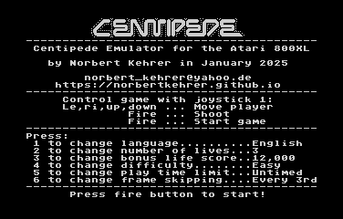
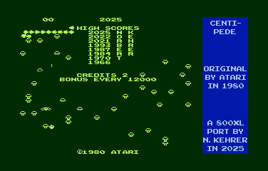
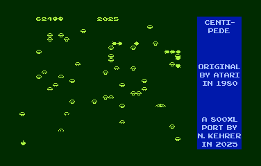
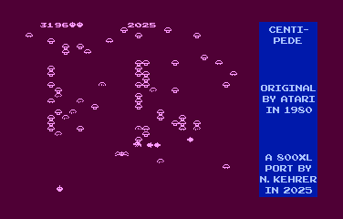
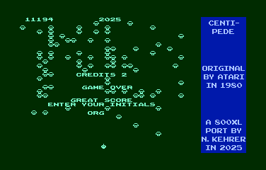
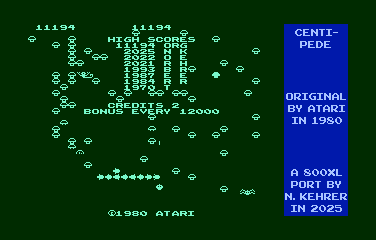

The program can be downloaded as an Atari 800XL "atr" file here: centipede.atr
Or you can take the "xex" file from here: centiped.xex
You can use one of these files with an Atari 800XL emulator or put it on a floppy disk or SD card and play it on the real machine.
In the following you will first see some screenshots of the running game and then find a description of the emulator.
|  |  |
|  |  |
|  |  |
Here is also a video of the emulator in action:
In 1981 Atari launched the aracade machine "Centipede". The game was developed by Lyle Rains, who also created "Asteroids", and Dona Bailey, the only woman in Atari's coin-op division back then. Centipede was one of the most commercially successful games at that time.
The arcade machine is based on a 6502 CPU and Atari's POKEY sound chip. The game was later ported to many different hardware platforms up to today's smartphone era.
Since the nineties, arcade emulators like MAME can emulate the classics like Centipede on modern computers. This program is a Centipede emulator for the Atari 800XL. The "emulation" of the arcade machine's CPU is done directly by the 6502 processor of the Atari home computer, which just runs the original game program. The arcade machine uses the POKEY chip for sound effects. As the Atari 800XL also has a POKEY built in, the original sound effects are directly played by this chip. The video hardware of the arcade machine is simulated on the Atari 800XL by specific routines in assembly language. In this way, the original game play is (more or less) exactly reproduced, with some major trade-offs, though, which had to be made due to the lower resolution and sprite and color capabilities of the Atari 800XL.
The Centipede emulator starts with a configuration screen, where you can select your language, number of lives, and other parameters with the keys "1" to "6". This selection corresponds to the DIP switch configuration which the original machine offered to the aracade operators. By pressing the fire button you start the emulation. Centipede is switched to free-play mode here, i.e. it is not necessary to "insert coins". A game can be started with the fire button.
Now have fun with the classic Centipede on your classic Atari 800XL computer!
Norbert